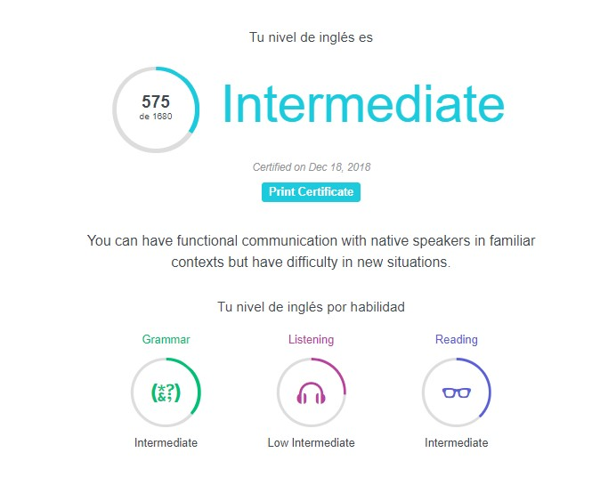

| Fecha de nacimiento | 17 de Febrero de 1997 | ||||||||||||||||||||||||||||||||||||||||||||||||||||||||||||||||||||||||||||||||||||||||||||||||||
| Lugar de nacimiento | Ciudad Valles, San Luis Potosí. México | ||||||||||||||||||||||||||||||||||||||||||||||||||||||||||||||||||||||||||||||||||||||||||||||||||
| Nacionalidad | Mexicana | ||||||||||||||||||||||||||||||||||||||||||||||||||||||||||||||||||||||||||||||||||||||||||||||||||
| Estado Civil | Soltero | ||||||||||||||||||||||||||||||||||||||||||||||||||||||||||||||||||||||||||||||||||||||||||||||||||
| CURP | VIRS970217HSPLDM05 | ||||||||||||||||||||||||||||||||||||||||||||||||||||||||||||||||||||||||||||||||||||||||||||||||||
| Cedula Licenciatura | 9895926 | ||||||||||||||||||||||||||||||||||||||||||||||||||||||||||||||||||||||||||||||||||||||||||||||||||
| Agosto 2015 – a la fecha | Licenciado en Sistemas Computacionales, Instituto Tecnológico de Ciudad Valles, Cd. Valles, S.L.P. Especialidad en Tecnologías de Software |
| 2012 - 2015 | Técnico en Informática, Centro de Bachillerato Tecnológico Agropecuario No. 121, Tamuin, San Luis Potosí. |
| Agosto 2015 – a la fecha | Licenciado en Sistemas Computacionales, Instituto Tecnológico de Ciudad Valles, Cd. Valles, S.L.P.Especialidad en Tecnologías de Software |
| 2012 - 2015 | Técnico en Informática, Centro de Bachillerato Tecnológico Agropecuario No. 121, Tamuin, San Luis Potosí. |
| Agosto – Diciembre 2018 | Vehículo a control por bluetooth, Feria tecnológica, Auditorio del Instituto Tecnológico de Ciudad Valles, Cd. Valles, S.L.P. |
| Enero – Junio 2018 | App web para la gestión de Hotspot, Control del acceso a internet en el Instituto Tecnológico de Ciudad Valles, Cd. Valles, S.L.P. |
| Agosto 2015 – a la fecha | Licenciado en Sistemas Computacionales, Instituto Tecnológico de Ciudad Valles, Cd. Valles, S.L.P. Especialidad en Tecnologías de Software |
| 2012 - 2015 | Técnico en Informática, Centro de Bachillerato Tecnológico Agropecuario No. 121, Tamuin, San Luis Potosí. |
| Sistemas Operativos | Linux, Windows. | Ofimática | Certificación Microsoft Office Specialist |
| Hardware | Intermedio | Programación Móvil | Android |
| Programación Estructurada y OO | Java, C/C++ | Base de Datos | PostgreSQL, MySQL |
| Programación Web | HTML, XML, CSS | Scripting | Bash |
| Maquetación | LATEX | SW de Diseño Grafico | Photoshop, GIMP |
| SW Educativo | Moodle | dministración Web | Bajo |
| Español | Nativo |
| Ingles |  |
| Mayo 2014 | Organizador de la 2a Feria Tecnológica de ISC, Instituto Tecnológico de Ciudad Valles, Cd. Valles, San Luis Potosí. Jurado del 3er Concurso de Programación, realizado en la 1er Semana de Ciencia y |
| Octubre 2013 | Tecnología en el marco del XXXIII Aniversario del Instituto, Instituto Tecnológico de Ciudad Valles, Cd. Valles, San Luis Potosí |
| Agosto 2016 | Instructor del curso Diseño de Bases de Datos en el Instituto Tecnológico de Ciudad Valles, Cd. Valles, San Luis Potosí. (30 horas) |
| Febrero 2014 | Instructor del curso – taller Introducción al uso del framework Slim PHP, Instituto Tecnológico de Ciudad Valles, Cd. Valles, San Luis Potosí. |